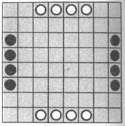
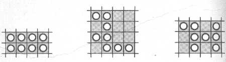
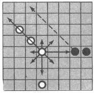
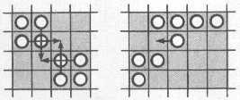
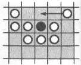

3.2. Филатов Ю.П. Стыковка в космосе, 1987
Игра «Стыковка». Представьте себе, что в космосе осуществляют взаимный поиск корабли двух экспедиций. В каждой экспедиции - восемь кораблей (рис. 1). Выигрывает тот, кто состыкуется первым. Способы стыковки различны (рис. 2). При выполненной
стыковке любой фишкой можно «перейти» на другую фишку, не двигаясь по диагоналям клеток.
Все фишки ходят одинаково, длина хода, то есть количество клеток, на которое передвигают фишку, определяется с учетом расположения соседних фишек. На рис. 3. показано, что белая фишка может двигаться в восьми направлениях, как шахматный ферзь.
Длина её хода точно равна количеству фишек, находящихся в данном направлении, включая и саму фишку. Например, по горизонтали вправо и по диагонали влево вверх можно сделать ход длиной в три клетки. По вертикали вниз фишка может идти на
две клетки, а по вертикали вверх - только на одну. В конце хода нельзя становиться на клетку, занятую своей (в нашем случае - белой) фишкой. Нельзя перепрыгивать через любую фишку противника, однако в конце хода (только в конце!) можно занять
ее место, если у фишки противника свободна диагональ длиной не менее четырех клеток, по которой она и перемещается, как это показано пунктиром на рис. 3. В противном случае ход белой фишки в данном направлении запрещен.
На рис. 4 приведено несколько возможных способов окончания стыковки. Экспедиции не враждуют друг с другом и не бьют чужие фишки. Но, как и в реальности, может произойти авария, если игрок будет удерживать одну из своих фишек в группе
фишек противника, мешая им. На рис. 5 белая фишка ходом по стрелке запирает блокированную с трех сторон черную фишку, которая терпит аварию, в результате «черные» проигрывают. Во избежание проигрыша следовало бы заранее отвести черную фишку.

Рис.1. Начальная позиция игры «Стыковка»

Рис.2. Варианты стыковки

Рис.3 Перемещение фишки в игре «Стыковка»

Рис.4. Окончание стыковки

Рис.5.Авария в игре «Стыковка»
|
|
- Персоналии
- История знаковых игр
- Наша игротека
- Головоломки, лингвистические игры
- Теория
- Прикладные аспекты
- Наши рецензии
- Журнал в журнале
- Другие статьи
|